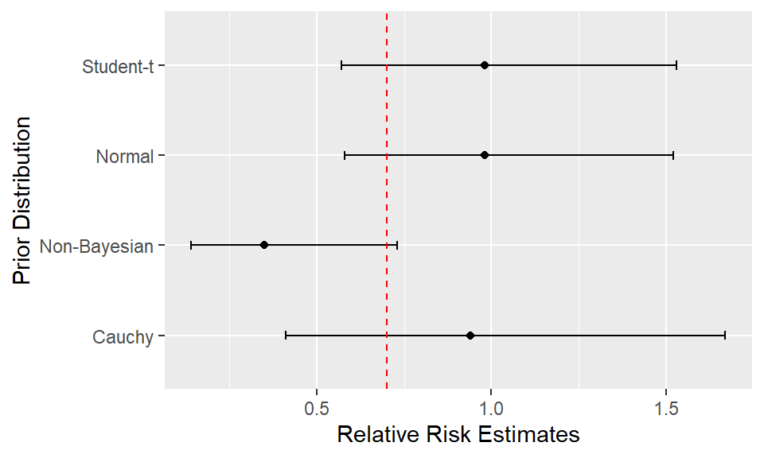

Exploring Bayesian Prior Distributions for Relative Risks in Epidemiology
Introduction
It goes without saying that prior beliefs exist in epidemiology and clinical studies. However, translating these beliefs into a mathematical prior distribution requires understanding of the biological data and the properties of the chosen prior distribution that describes the belief appropriately. This report aims to summarize common choices of prior distributions for standard epidemiological and clinical data such as relative risk and odds ratio. In the following sections, we will first introduce the common prior distribution choices for relative risk. Then we choose a subset of prior distributions to perform a simulation to examine whether the true relative risk value was recovered accurately and compare the estimates to non-Bayesian methods as well.
Common Choice of Prior Distributions
Relative risk is a common measure of association between variables in clinical studies and epidemiology. It compares the risk of exposed and unexposed patients. In this section we take a look at the Bayesian analysis of counts from studies with dichotomous exposures where the metric of interest is either the relative risk. Such data is often summarized in a 2x2 table illustrated in Table 1. We investigate a few common prior distribution choices ranging from normal distributions to Student-t distributions that account for non-normality of the prior beliefs.
Normal Priors for Log Relative Risk
Relative risk can be directly estimated from a log binomial regression model by \(e^{\beta_{1}}\). Let \(y_i\) be the outcome for patient \(i\), the model follows \[ y_i \sim Bernoulli(p_i) \] \[ log(p_i) = \beta_0 + \beta_1 x_i \]
where \(x_i = 1\) for the treatment group and 0 for the control group. We specify informative normal priors for the log relative risk of \(\beta_1\) that expresses skepticism about large treatment effects. Mathematically, a skeptical prior about a treatment effect will follow a normal distribution with a mean of zero and a standard deviation to reflect potential treatment differences. The prior standard deviation can be thought of as the degree of skepticism of large effects, and smaller values show high levels of skepticism (Spiegelhalter, Abrams, and Myles 2004).
Furthermore, approximate approaches for Bayesian inference in the 2x2 table, sometimes called semi-Bayes, has also been discussed in literature (Held, Ahrens, and Pigeot 2014). Based on standard sampling models for the data in the 2x2 table, for example having 2 binomial distributions, or multinational distributions for the 4 cell counts, one can examine the impact of having different values of normal priors for log(RR) by constructing a prior table such that
- \(RR_{prior}= \frac{A_1/N_1}{A_0/N_0} \approx exp(m_{prior})\)
- \(\frac{1}{A_1} + \frac{1}{A_0} \approx v_{prior}\)
where \(m_{prior}\) is the mean and \(v_{prior}\) the variance and assuming the outcome is rare. In fact, the approximate posterior distribution for \(\beta_1= log(RR)\) can be obtained without software for the simple 2x2 case using maximum likelihood or information weighting (Greenland 2007).
Non-Normal Priors
Choices for non-normal prior distributions have been suggested for binary outcomes as robust alternatives where the goal is to to increase tail-weight or skew the prior distribution for the log relative risk away from normality.
Student-t Distribution and Cauchy Distribution
Gelman et al. recommend the Cauchy distribution with center 0 and scale 2.5 as a default prior distribution choice and the Student-t prior distribution for generalized linear models which includes logistic regressions and log-binomial regression models (Gelman et al. 2008). The Student-t distribution and Cauchy distribution, which is a special case of the Student-t, have heavier tails than a normal distribution which means it will assign higher probability to larger values of log relative risk compared to a normal prior. This is useful when the prior belief is skewed towards large values of log relative risk, such as being certain that individuals exposed to a type of harmful chemicals have higher risk of being diagnosed with disease.
Generalized-F Prior Distribution
Greenland describes generalized-F prior distributions for relative risks. It has the benefit of retaining the simple 2x2 table form of the prior data while accounting for the non-normality of the prior beliefs (Greenland 2007).
The exact prior probabilities can be computed, along with the lower and upper-bound of the credible intervals implied by prior data for percentiles of the \(F\) distribution. The exact prior distribution for \(\frac{RR}{RR_{prior}}\) based on the 2x2 table is an F distribution with \(2A_1\) and \(2A_0\) degrees of freedom, and \(RR_{prior}=e^{m_{prior}}\) with notations the same as the section above. For example, if we fix \(RR_{prior} = 2\) and \(A_1=100, A_0=1\), then the F prior distribution for relative risk has 200 and 2 degrees of freedom. The corresponding 2.5th and 97.5th percentiles of this F distribution are 0.27 and 39.5, which leads to an exact prior 95 percent interval for relative risk of 2(0.27,39.5). This corresponds to prior limits of ln(0.27) = -1.31 and ln(39.5) = 3.68 for the log relative risk. Posterior distribution can then be estimated via maximum likelihood or information weighting.
Simulation
Normal, Student-t, and Cauchy Prior Comparisons
We compare the point estimates of relative risk from a Normal prior, Cauchy prior, a Student-t prior, and a non-Bayesian method to examine the performance of the different methods.
Let \(x_i\) be the indicator variable of being in the treatment group or not. \(p_{control}\) and \(p_{trtment}\) is the true probability of the subject being in each of the group. We simulate data via the following process:
\[ x_{i} \sim Bernoulli(0.5) \] \[ y_i \sim Binomial(n, p_i) \] \[ p_i = \begin{cases} p_{control} & x_i=0 \\ p_{trtment}=p_{control} RR_{true} & x_i=1 \end{cases} \] We set sample size \(n=100\), \(p_{control}=0.3\), and \(RR_{true}=0.7\). Results are summarized in Figure 1 and Table 2. The vertical dashed line in Figure 1 indicates the real relative risk value.
As shown in Figure 1, all methods were able to capture the true relative risk within their credible intervals, although the width of the intervals for the Bayesian methods seem slightly wider indicating more uncertainty. However, if a more informative prior is introduced, the uncertainty will be reduced.
Conclusions
The report summarized some prior distributions for relative risks. Normal distributions are a common choice. Other non-Normal distributions were also discussed and are suitable for situations when the prior belief wants to increase tail-weight or skew the prior distribution for the log relative risk away from normality. We briefly touched on two different ways of performing the Bayesian analysis- via models such as the log binomial regression which we used in our simulation, or the semi-Bayes methods, which uses the simple \(2 \times 2\) tables. Last but not least, our simulation served as an exercise to apply the prior distributions in estimating the relative risk.
In essence, the rule of thumb is that the prior distribution should always reflect the knowledge about the parameter. Ideally, this prior distribution should be obtained via expert knowledge, which serves as a reminder to know the data generation mechanism and combine the data with real world interpretations.
References
Gelman, Andrew, Aleks Jakulin, Maria Grazia Pittau, and Yu-Sung Su. 2008. “A Weakly Informative Default Prior Distribution for Logistic and Other Regression Models.” The Annals of Applied Statistics 2 (4): 1360–83.
Greenland, Sander. 2007. “Prior Data for Non-Normal Priors.” Statistics in Medicine 26 (19): 3578–90.
Held, Leonhard, Wolfgang Ahrens, and Iris Pigeot. 2014. “Bayesian Methods in Epidemiology.”
Spiegelhalter, David J, Keith R Abrams, and Jonathan P Myles. 2004. Bayesian Approaches to Clinical Trials and Health-Care Evaluation. Vol. 13. John Wiley & Sons.